On the 9th July 1751, the statue of George II in the Royal Square was unveiled with a military parade, salute of cannons, three cheers, a bonfire, public toasts and sounding trumpet.
On the 9th July 2001, the 250th anniversary of this event was marked by the temporary installation of an enormous birthday cake in the Royal Square by artist Geraint Jennings. Slices of the cake were placed around the statue as part of a “happening” to celebrate a quarter-millennium of public art in the Island.
| 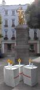 | 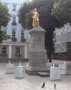 |
| 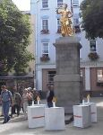 | 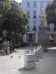 |
“The King has witnessed so many things in 250 years in the Royal Square that it is only right that something out of the ordinary be done to mark the occasion,” said Geraint Jennings. “He has been tarred-and-feathered, shot at, and used as a billboard - but I don't think he's ever had a birthday cake before.”
The installation started at 10am on Monday 9th July - the same time as the procession started in 1751 - in the Royal Square, and will only took 30 minutes as a time-based work of art.
| 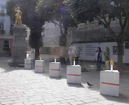 | |
| 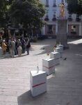 | 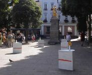 |
| 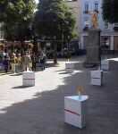 | 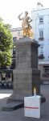 |
| 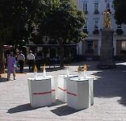 | 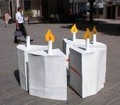 |
| 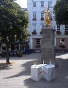 | 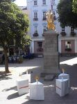 |
The only permanent trace of the “happening” are the photos taken as part of the event.
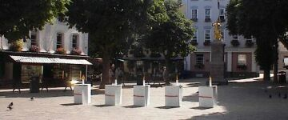
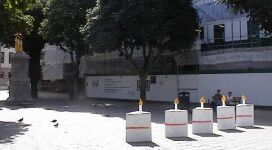